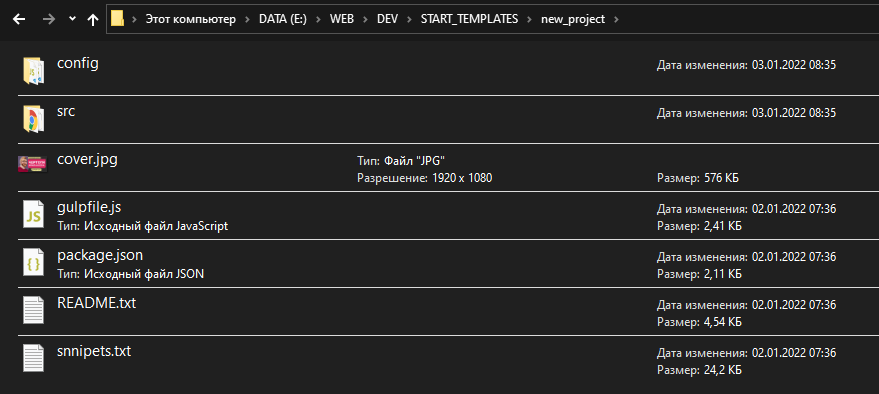
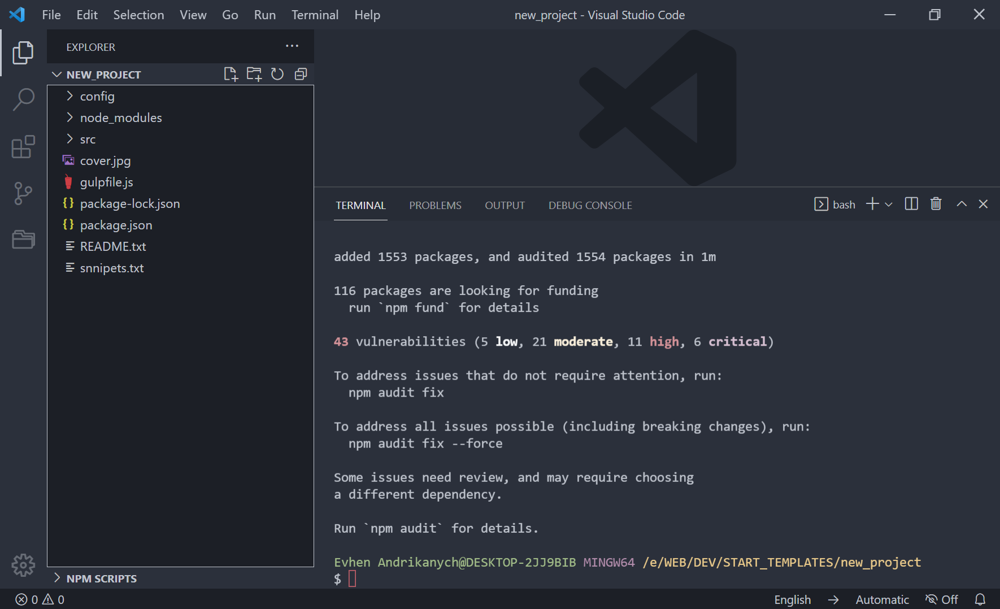
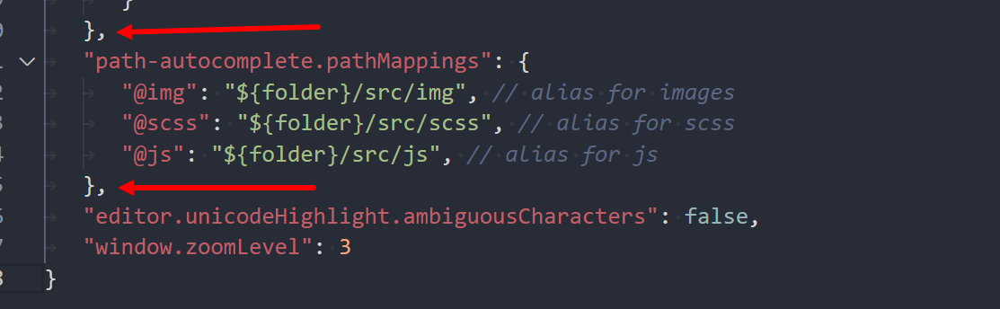

Встановлення шаблону
Насамперед слід розархівувати zip-архів у вашу папку проекту. Слідкуйте за тим, щоб папка та її батьківські папки не містили в назві кирилицю, пробіли, символи # та !
Якщо ви до цього моменту не користувалися інструментом GULP, WEBPACK та пакетним менеджером NPM, слід завантажити та встановити Node.js. Завантажуйте версію рекомендовану для більшості.
Далі відкриваємо термінал у цій папці проекту. Термінал може бути вбудований або відкритий окремо від редактора. Рекомендую використовувати термінал GIT Bash.
Якщо ви до цього моменту не користувалися інструментом GULP, введіть у термінал команду npm i gulp-cli -g це встановить GULP у систему глобально.
Після завершення встановлення GULP введіть командуnpm i
У процесі установки в терміналі можуть бути повідомлення з позначкою WARN на жовтому фоні. Ці повідомлення можна ігнорувати. Але якщо ви отримуєте повідомлення ERR! червоним кольором — це критична помилка та її потрібно виправляти.
Часто може виникнути помилка залежностей встановлюваних пакетів (плагінів), і в NPM вище 7 версії це призводить до критичної помилки та зупинки інсталяції.
Щоб вирішити цю проблему, виконайте команду npm i --legacy-peer-deps, це запустить процес установки, ігноруючи подібні несумісності.
Помните – версии NodeJS и Python в вашей системе должны быть свежих версий.
Після успішного встановлення, у вас з’явиться папка node_modules та файл package-lock.json
Детальніше про архітектуру папок та файлів ЧФ ми поговоримо в наступному розділі, а поки що продовжуємо підготовку до роботи
Запуск шаблону та режими роботи
Шаблон «Чертоги Фрілансера» може виконувати кілька сценаріїв:
- Режим розробника. Команда запуску npm run dev
- Режим розробника. Команда запуску npm run dev
- Режим продакшена та надсилання результату на сервер по FTP. Команда запуску npm run deploy
- Режим продакшена та створення ZIP-архіву з результатом. Команда запуску npm run zip
- Режим продакшена без створення WEBP зображень та дій пов’язаних із цим форматом. Команда запуску npm run devbuild
Додаткові команди:
- Ручне створення SVG спрайт. Команда запуску npm run sprite
- Конвертація шрифтів із примусовим перезаписом файлу стилів. Команда запуску npm run fonts
Режим розробника
У режимі розробника виконуються лише необхідні для розробки завдання:
- Конвертація шрифтів та запис у файл стилів
- Конвертація SCSS файлів у CSS файли, перейменування псевдонімів
- Складання HTML файлів, перейменування псевдонімів
- При використання PUG, файли перетворюються на HTML, перейменовуються псевдоніми
- Збираються JS файли
- Запускається локальний сервер, відкривається браузер з індексною сторінкою.
- Запускається спостерігач за зміною фалів. При кожній зміні файлу браузер оновлює сторінку (крім сторінки-змісту)
- Копіюються файли із зазначеної папки
- HTML CSS JS файли результату не записуються на диск (папка dist не створюється).
Якщо у вас слабкий ПК (мало ОЗУ) або шаблон з часом починає гальмувати, відкрийте файл config/webpack.dev.js та розкоментуйте блок :
devMiddleware: {
writeToDisk: true,
},
Параметр увімкне створення папки dist у режимі розробника, що підвищує швидкість роботи збірки на слабких ПК.
Режим продакшену
У режимі продакшену виконується фіналізація проекту, а саме:
- Конвертація шрифтів та запис у файл стилів
- Конвертація зображень у WEBP формат. Стиснення та оптимізація JPG PNG SVG картинок
- Конвертація SCSS файлів у CSS файли, перейменування псевдонімів, групування медіа-запитів, додаються вендорні префікси для забезпечення кросбраузерності, обробляється підключення WEBP зображень, проводиться стиснення несжата копія)
- Складання HTML файлів, перейменування псевдонімів, обробляється підключення WEBP зображень
- При використанні PUG, файли перетворюються на HTML, перейменовуються псевдоніми, обробляється підключення WEBP зображень
- Збираються JS файли, проводиться стиснення та оптимізація кінцевого файла. У результат потрапляє лише використовуваний код. Підсумком завдання буде створення двох файлів: стисненого app.min.js (підключений до HTML) і не стисненого app.js для подальшого редагування іншими фахівцями.
- Копіюються файли із зазначеної папки
- Всі файли з результатом записуються на диск (зазвичай до папки dist), локальний сервер не запускається
Отже, давайте запустимо наш шаблон в режимі розробника, для цього в терміналі виконуємо команду npm run dev
Після запуску система виконає всі завдання режиму розробника, описані вище. Результатом роботи має стати відкрита у браузері сторінка змісту.
Увага, сторінка змісту не оновлюється автоматично під час її редагування
Можливі помилки та їх вирішення
Якщо браузер не запустився, а в терміналі видно помилки (ERR!), переконайтеся що:
- У вас встановлено Node.js та Python останньої версії
- Термінал відкритий з правами адміністратора
- У назвах папок на всьому шляху до проекту немає символу # або !
- Папки та файли мають бути названі латиницею без пробілів
- Тег img та його вміст мають бути записані в один рядок без переносів
- В атрибуті src повинен бути вказаний шлях до існуючої малюнку без пробілів
Якщо помилка пов’язана з node-sass, запустіть команду npm rebuild node-sass
При помилці пов’язаної з Python запустіть команду npm install -g windows-build-tools
При помилці Error [ERR_UNSUPPORTED_ESM_URL_SCHEME]:
- Качаємо версію 14.15.1 (https://nodejs.org/dist/v14.15.1/)
- Заходимо в папку із встановленим NodeJS, розпаковуємо вміст архіву в папку, із заміною файлів.
- Далі йдемо сюди «Панель управління» => «Система» => «Додаткові параметри системи» => «Додатково» => «Змінні середовища»
- У Системних змінних «Створити» змінну з ім’ям ‘NODE_SKIP_PLATFORM_CHECK’ і створюємо їй значення ‘1’.
- Перезапускаємо систему і запускаємо шаблон згідно з інструкцією
Підготовка редактора до комфортної роботи із шаблоном
Для того щоб насолоджуватися можливостями шаблону ЧФ на повну, нам слід зробити деякі налаштування редактора. Як приклад представлений редактор VS Code
Налаштування псевдонімів
У розділі Архітектура шаблону. Файли та папки ви дізнаєтеся що різні частини HTML/PUG SCSS файлів знаходяться на різних рівнях вкладеності, що створює певні незручності при підключенні, наприклад картинок, у процесі розробки.
Незручності ми не любимо тому налаштуємо так звані псевдоніми (аліаси) шляхів до папок. Для цього нам потрібно встановити плагін Path Autocomplete. Після встановлення відкриваємо налаштування редактора (settings.json), для цього тиснемо F1 у редакторі та в рядку пошуку пишемо Open Settings і тиснемо на посилання Open Settings (JSON).
У цей файл потрібно акуратно вставити наступний код:
"path-autocomplete pathMappings": {
"@img": "${folder}/src/img", // alias for images
"@scss": "${folder}/src/scss", // alias for scss
"@js": "${folder}/src/js", // alias for js
}
Дуже важливо дотримуватися синтаксису JSON, звертайте увагу на коми:
Після цього ви можете сміливо використовувати псевдоніми при підключенні файлів, наприклад:
<img src="@img/cover.jpg"alt="Малюнок">
Редактор розпізнає псевдонім і виведе список файлів у зазначеній папці, а під час збирання система сама поміняє псевдонім на потрібний шлях!
Налаштування сніпетів
Сніпети — це короткі коди, які можуть викликати готові заготовки коду будь-якого обсягу. Це величезно підвищує швидкість розробки.
Звичайно, я використав цю супер можливість у своїх чертогах. Тобто, побудова, наприклад, правильної HTML структури для того чи іншого JS модуля я додав у СНІПЕТ.
Щоб додати набір сніпетів із шаблону до себе в редактор виконуємо такі дії:
- Відкриваємо файл snnipets.txt з архіву ЧФ і копіюємо весь вміст
- У редакторі VS Code переходимо в налаштування (шестерня) -> User Snippets ->New Global Snippets File пишемо назву, наприклад fls, і замінюємо вміст на скопійований з snnipets.txt
- При оновленні шаблону та сніпетів створювати новий файл не потрібно, слід відкрити існуючий та оновити вміст
Ви можете створювати і додавати свої сніпети, допоможе в цьому сервіс https://snippet-generator.app/